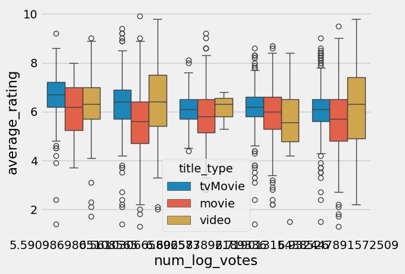

import pandas as pdholiday_movies = pd.read_csv("https://bcdanl.github.io/data/holiday_movies.csv")
holiday_movies| tconst | title_type | primary_title | simple_title | year | runtime_minutes | average_rating | num_votes | |
|---|---|---|---|---|---|---|---|---|
| 0 | tt0020356 | movie | Sailor's Holiday | sailors holiday | 1929 | 58.0 | 5.4 | 55 |
| 1 | tt0020823 | movie | The Devil's Holiday | the devils holiday | 1930 | 80.0 | 6.0 | 242 |
| 2 | tt0020985 | movie | Holiday | holiday | 1930 | 91.0 | 6.3 | 638 |
| 3 | tt0021268 | movie | Holiday of St. Jorgen | holiday of st jorgen | 1930 | 83.0 | 7.4 | 256 |
| 4 | tt0021377 | movie | Sin Takes a Holiday | sin takes a holiday | 1930 | 81.0 | 6.1 | 740 |
| ... | ... | ... | ... | ... | ... | ... | ... | ... |
| 2260 | tt9747440 | tvMovie | A Christmas Love Story | a christmas love story | 2019 | 84.0 | 6.9 | 1652 |
| 2261 | tt9747450 | tvMovie | Holiday for Heroes | holiday for heroes | 2019 | 81.0 | 7.0 | 1655 |
| 2262 | tt9802890 | tvMovie | Christmas Jars | christmas jars | 2019 | 93.0 | 7.3 | 914 |
| 2263 | tt9815084 | tvMovie | A Very British Christmas | a very british christmas | 2019 | 90.0 | 5.7 | 725 |
| 2264 | tt9892854 | tvMovie | #Xmas | xmas | 2022 | 84.0 | 5.8 | 926 |
2265 rows × 8 columns
holiday_movie_genres = pd.read_csv("https://bcdanl.github.io/data/holiday_movie_genres.csv")
holiday_movie_genres| tconst | genres | |
|---|---|---|
| 0 | tt0020356 | Comedy |
| 1 | tt0020823 | Drama |
| 2 | tt0020823 | Romance |
| 3 | tt0020985 | Comedy |
| 4 | tt0020985 | Drama |
| ... | ... | ... |
| 4526 | tt9815084 | Family |
| 4527 | tt9815084 | Romance |
| 4528 | tt9892854 | Comedy |
| 4529 | tt9892854 | Drama |
| 4530 | tt9892854 | Romance |
4531 rows × 2 columns
#2000s Movies Ordered By Rating
holiday_movies_2000s = holiday_movies[holiday_movies['year']>=2000]
movies_2000s_by_rating = holiday_movies_2000s.sort_values('average_rating', ascending = True)
movies_2000s_by_rating| tconst | title_type | primary_title | simple_title | year | runtime_minutes | average_rating | num_votes | |
|---|---|---|---|---|---|---|---|---|
| 2179 | tt8941352 | video | A Grinch Christmas Carol | a grinch christmas carol | 2012 | 2.0 | 1.0 | 41 |
| 1797 | tt4009460 | movie | Kirk Cameron's Saving Christmas | kirk camerons saving christmas | 2014 | 79.0 | 1.3 | 16608 |
| 854 | tt1242748 | video | Johnson Family Christmas Dinner | johnson family christmas dinner | 2008 | 88.0 | 1.5 | 127 |
| 927 | tt13180242 | tvMovie | A Christmas Call | a christmas call | 2020 | NaN | 1.5 | 11 |
| 1610 | tt2578608 | movie | Krampus: The Christmas Devil | krampus the christmas devil | 2013 | 82.0 | 1.6 | 1963 |
| ... | ... | ... | ... | ... | ... | ... | ... | ... |
| 1416 | tt21308838 | video | Aunty Donna: Always Room for Christmas Pud | aunty donna always room for christmas pud | 2018 | 4.0 | 9.3 | 24 |
| 1601 | tt25147828 | movie | Cheap vs. Expensive Xmas Day | cheap vs expensive xmas day | 2022 | 107.0 | 9.5 | 14 |
| 1522 | tt2273141 | video | Christmas Bone Us | christmas bone us | 2012 | 6.0 | 9.8 | 10 |
| 1433 | tt21411946 | movie | Bringing Back Christmas | bringing back christmas | 2023 | NaN | 9.9 | 20 |
| 1204 | tt1569470 | video | NLO Spirit of Christmas | nlo spirit of christmas | 2009 | 70.0 | 10.0 | 18 |
1789 rows × 8 columns
#Top Rated Movies of the 2000s
holiday_movies_2000s = holiday_movies[holiday_movies['year']>=2000]
top_movies_2000s = holiday_movies_2000s.loc[holiday_movies_2000s.groupby('year')['average_rating'].idxmax()]
top_movies_2000s[['primary_title', 'year', 'average_rating']]| primary_title | year | average_rating | |
|---|---|---|---|
| 273 | A Christmas Tree and a Wedding | 2000 | 8.3 |
| 443 | Andy Williams - Best of Christmas | 2001 | 8.3 |
| 531 | Santa Claus Versus the Christmas Vixens | 2002 | 9.1 |
| 508 | An X-Mas Message from David X. Cohen | 2003 | 8.7 |
| 487 | EastEnders: Christmas Party | 2004 | 9.0 |
| 566 | Brian Setzer: Christmas Extravaganza | 2005 | 8.7 |
| 564 | Christmas and the Civil War | 2006 | 9.3 |
| 1042 | A WowieBozowee Christmas | 2007 | 9.1 |
| 1275 | The Untold Christmas Story | 2008 | 8.1 |
| 1204 | NLO Spirit of Christmas | 2009 | 10.0 |
| 1306 | Santa Preys for X-mas | 2010 | 8.5 |
| 1388 | Buck Denver Asks... Why Do We Call It Christmas? | 2011 | 9.0 |
| 1522 | Christmas Bone Us | 2012 | 9.8 |
| 1762 | Jubilee and Elmer Holiday Adventures: Special ... | 2013 | 9.0 |
| 1987 | Christmas Truce of 1914 | 2014 | 8.9 |
| 1929 | Punitive psychiatry: Antichristmas | 2015 | 8.9 |
| 1983 | Joe Pera Helps You Find the Perfect Christmas ... | 2016 | 8.3 |
| 1021 | TBS Wrecked: Christmas Killer | 2017 | 8.9 |
| 1416 | Aunty Donna: Always Room for Christmas Pud | 2018 | 9.3 |
| 812 | Last Christmas: Emilia Sings | 2019 | 8.9 |
| 1031 | A Baby Reindeer's First Christmas | 2020 | 9.0 |
| 1100 | The Business of Christmas 2 | 2021 | 8.2 |
| 1601 | Cheap vs. Expensive Xmas Day | 2022 | 9.5 |
| 1433 | Bringing Back Christmas | 2023 | 9.9 |
#Genres of the Top Rated Christmas Movies Throughout the 2000s
movies_and_genres = pd.merge(top_movies_2000s, holiday_movie_genres, on = ['tconst'], how = 'left')
genre_dat = movies_and_genres[['primary_title', 'average_rating', 'genres']]
genre_dat.set_index('genres')| primary_title | average_rating | |
|---|---|---|
| genres | ||
| Drama | A Christmas Tree and a Wedding | 8.3 |
| Documentary | Andy Williams - Best of Christmas | 8.3 |
| Comedy | Santa Claus Versus the Christmas Vixens | 9.1 |
| Short | Santa Claus Versus the Christmas Vixens | 9.1 |
| Comedy | An X-Mas Message from David X. Cohen | 8.7 |
| Short | An X-Mas Message from David X. Cohen | 8.7 |
| Comedy | EastEnders: Christmas Party | 9.0 |
| Family | EastEnders: Christmas Party | 9.0 |
| Music | EastEnders: Christmas Party | 9.0 |
| Music | Brian Setzer: Christmas Extravaganza | 8.7 |
| Documentary | Christmas and the Civil War | 9.3 |
| History | Christmas and the Civil War | 9.3 |
| War | Christmas and the Civil War | 9.3 |
| Family | A WowieBozowee Christmas | 9.1 |
| Documentary | The Untold Christmas Story | 8.1 |
| Music | NLO Spirit of Christmas | 10.0 |
| Action | Santa Preys for X-mas | 8.5 |
| Comedy | Santa Preys for X-mas | 8.5 |
| Horror | Santa Preys for X-mas | 8.5 |
| Adventure | Buck Denver Asks... Why Do We Call It Christmas? | 9.0 |
| Comedy | Buck Denver Asks... Why Do We Call It Christmas? | 9.0 |
| Family | Buck Denver Asks... Why Do We Call It Christmas? | 9.0 |
| Comedy | Christmas Bone Us | 9.8 |
| Family | Christmas Bone Us | 9.8 |
| Mystery | Christmas Bone Us | 9.8 |
| Animation | Jubilee and Elmer Holiday Adventures: Special ... | 9.0 |
| Short | Jubilee and Elmer Holiday Adventures: Special ... | 9.0 |
| History | Christmas Truce of 1914 | 8.9 |
| Short | Christmas Truce of 1914 | 8.9 |
| War | Christmas Truce of 1914 | 8.9 |
| Animation | Punitive psychiatry: Antichristmas | 8.9 |
| Horror | Punitive psychiatry: Antichristmas | 8.9 |
| Short | Punitive psychiatry: Antichristmas | 8.9 |
| Comedy | Joe Pera Helps You Find the Perfect Christmas ... | 8.3 |
| Short | TBS Wrecked: Christmas Killer | 8.9 |
| Comedy | Aunty Donna: Always Room for Christmas Pud | 9.3 |
| Short | Aunty Donna: Always Room for Christmas Pud | 9.3 |
| Documentary | Last Christmas: Emilia Sings | 8.9 |
| Short | Last Christmas: Emilia Sings | 8.9 |
| Documentary | A Baby Reindeer's First Christmas | 9.0 |
| Drama | The Business of Christmas 2 | 8.2 |
| Comedy | Cheap vs. Expensive Xmas Day | 9.5 |
| Family | Bringing Back Christmas | 9.9 |
#Most Common Genres for Top Rated Movies in the 2000s
top_genres = movies_and_genres['genres'].value_counts()
top_genres| count | |
|---|---|
| genres | |
| Comedy | 1025 |
| Drama | 828 |
| Romance | 737 |
| Family | 707 |
| Animation | 268 |
| Fantasy | 185 |
| Adventure | 117 |
| Documentary | 101 |
| Short | 96 |
| Music | 91 |
| Musical | 78 |
| Horror | 63 |
| Crime | 44 |
| Mystery | 37 |
| Thriller | 32 |
| Action | 31 |
| Sci-Fi | 14 |
| History | 13 |
| War | 9 |
| Western | 6 |
| Biography | 6 |
| Sport | 5 |
| Film-Noir | 2 |
| Talk-Show | 2 |
| News | 1 |
| Reality-TV | 1 |
Homeowork 5
movies_and_genres = pd.merge(holiday_movies, holiday_movie_genres, on = ['tconst'], how = 'left')
movies_and_genres = movies_and_genres[['title_type', 'average_rating', 'genres']]movies_and_genres| title_type | average_rating | genres | |
|---|---|---|---|
| 0 | movie | 5.4 | Comedy |
| 1 | movie | 6.0 | Drama |
| 2 | movie | 6.0 | Romance |
| 3 | movie | 6.3 | Comedy |
| 4 | movie | 6.3 | Drama |
| ... | ... | ... | ... |
| 4526 | tvMovie | 5.7 | Family |
| 4527 | tvMovie | 5.7 | Romance |
| 4528 | tvMovie | 5.8 | Comedy |
| 4529 | tvMovie | 5.8 | Drama |
| 4530 | tvMovie | 5.8 | Romance |
4531 rows × 3 columns
by_genre = pd.DataFrame(holiday_movie_genres.groupby('genres').size().reset_index())
by_genre.columns = ["genres", "Count"]by_genre| genres | Count | |
|---|---|---|
| 0 | Action | 31 |
| 1 | Adventure | 117 |
| 2 | Animation | 268 |
| 3 | Biography | 6 |
| 4 | Comedy | 1025 |
| 5 | Crime | 44 |
| 6 | Documentary | 101 |
| 7 | Drama | 828 |
| 8 | Family | 707 |
| 9 | Fantasy | 185 |
| 10 | Film-Noir | 2 |
| 11 | History | 13 |
| 12 | Horror | 63 |
| 13 | Music | 91 |
| 14 | Musical | 78 |
| 15 | Mystery | 37 |
| 16 | News | 1 |
| 17 | Reality-TV | 1 |
| 18 | Romance | 737 |
| 19 | Sci-Fi | 14 |
| 20 | Short | 96 |
| 21 | Sport | 5 |
| 22 | Talk-Show | 2 |
| 23 | Thriller | 32 |
| 24 | War | 9 |
| 25 | Western | 6 |
movies_and_genres = pd.merge(movies_and_genres, by_genre, on = ['genres'])movies_and_genres| title_type | average_rating | genres | Count | |
|---|---|---|---|---|
| 0 | movie | 5.4 | Comedy | 1025 |
| 1 | movie | 6.0 | Drama | 828 |
| 2 | movie | 6.0 | Romance | 737 |
| 3 | movie | 6.3 | Comedy | 1025 |
| 4 | movie | 6.3 | Drama | 828 |
| ... | ... | ... | ... | ... |
| 4494 | tvMovie | 5.7 | Family | 707 |
| 4495 | tvMovie | 5.7 | Romance | 737 |
| 4496 | tvMovie | 5.8 | Comedy | 1025 |
| 4497 | tvMovie | 5.8 | Drama | 828 |
| 4498 | tvMovie | 5.8 | Romance | 737 |
4499 rows × 4 columns
top_genres = movies_and_genres.groupby('genres')['Count'].sum().nlargest(5).index
top_five = movies_and_genres[movies_and_genres['genres'].isin(top_genres)]
top_five| title_type | average_rating | genres | Count | |
|---|---|---|---|---|
| 0 | movie | 5.4 | Comedy | 1025 |
| 1 | movie | 6.0 | Drama | 828 |
| 2 | movie | 6.0 | Romance | 737 |
| 3 | movie | 6.3 | Comedy | 1025 |
| 4 | movie | 6.3 | Drama | 828 |
| ... | ... | ... | ... | ... |
| 4494 | tvMovie | 5.7 | Family | 707 |
| 4495 | tvMovie | 5.7 | Romance | 737 |
| 4496 | tvMovie | 5.8 | Comedy | 1025 |
| 4497 | tvMovie | 5.8 | Drama | 828 |
| 4498 | tvMovie | 5.8 | Romance | 737 |
3565 rows × 4 columns
import numpy as np
top_five['num_log_votes'] = np.log(top_five['Count'])
top_fiveSettingWithCopyWarning:
A value is trying to be set on a copy of a slice from a DataFrame.
Try using .loc[row_indexer,col_indexer] = value instead
See the caveats in the documentation: https://pandas.pydata.org/pandas-docs/stable/user_guide/indexing.html#returning-a-view-versus-a-copy
top_five['num_log_votes'] = np.log(top_five['Count'])| title_type | average_rating | genres | Count | num_log_votes | |
|---|---|---|---|---|---|
| 0 | movie | 5.4 | Comedy | 1025 | 6.932448 |
| 1 | movie | 6.0 | Drama | 828 | 6.719013 |
| 2 | movie | 6.0 | Romance | 737 | 6.602588 |
| 3 | movie | 6.3 | Comedy | 1025 | 6.932448 |
| 4 | movie | 6.3 | Drama | 828 | 6.719013 |
| ... | ... | ... | ... | ... | ... |
| 4494 | tvMovie | 5.7 | Family | 707 | 6.561031 |
| 4495 | tvMovie | 5.7 | Romance | 737 | 6.602588 |
| 4496 | tvMovie | 5.8 | Comedy | 1025 | 6.932448 |
| 4497 | tvMovie | 5.8 | Drama | 828 | 6.719013 |
| 4498 | tvMovie | 5.8 | Romance | 737 | 6.602588 |
3565 rows × 5 columns
import seaborn as sns
import matplotlib.pyplot as plt
plt.style.use('fivethirtyeight')sns.boxplot(data = top_five,
x = 'num_log_votes',
y = 'average_rating',
hue = 'title_type')
The rating of Holiday media decreased slightly with more votes. TV Movies appeared to have the most consistent decreases in ratings with more votes.